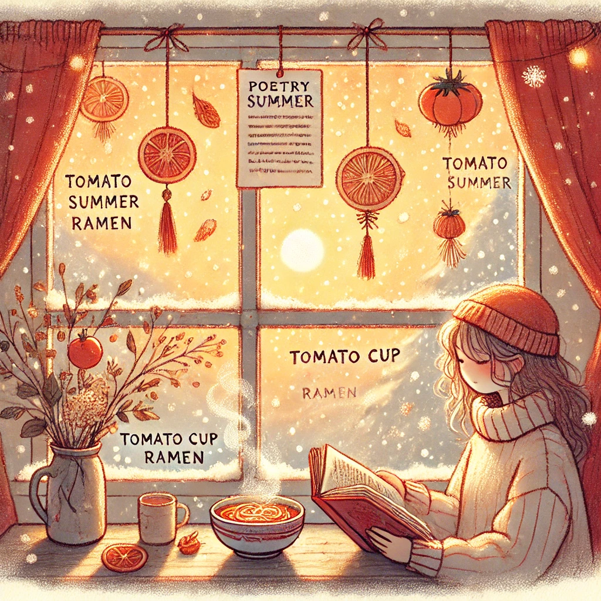

토마토 컵라면
목차
작가
차정은
출판일
2022년
감상평에 대한 AI그림
아름다운 단어들로 사랑에 대해 말하는 책이다.
여름 분위기인 책이지만 나는 겨울에 이 시집을 구매하였는데, 읽으며 여름을 더 갈망하게 된 것 같다.
분위기를 잘 표현했다는 말이다. 간단하게 읽기 좋은 몽글몽글한 시들이 많다.

감상평에 대한 AI평가
AI평가
✨ 1. 표현력 🌿
"아름다운 단어들로 사랑에 대해 말하는 책이다."라는 문장은 간결하면서도 책의 본질을 잘 전달하고 있어.
✨ 2. 분석력 🔍
책의 계절적 분위기(여름)와 본인이 책을 읽은 시점(겨울)을 대비하며 감정을 분석한 점이 흥미로워.
✨ 3. 개인적 경험과 연계 ☕
책을 읽은 계절과 감정 변화를 연결한 점이 감상의 진정성을 높여줘.